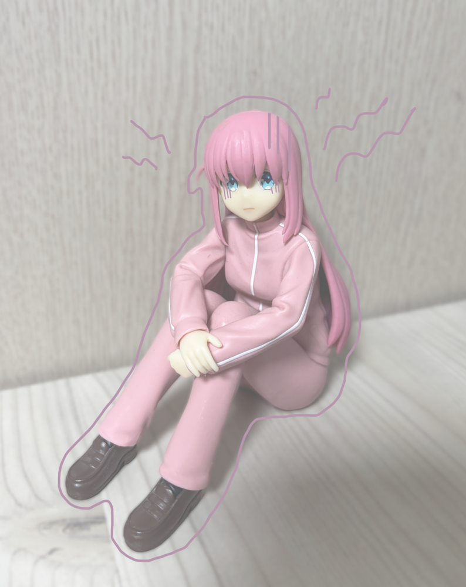
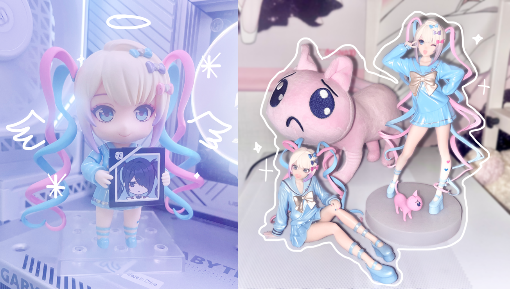

~가지고 있는 피규어를 중심으로~
세상에는 다양한 미소녀 캐릭터들이 존재합니다. 요즘은 ‘미소녀’라는 것이 하나의 장르가 될 정도로 미소녀 캐릭터의 인기는 대단합니다.
2010년에 교토 애니메이션에서 방영된 케이온 이란 애니메이션을 아시나요? 해당 작품은 밴드를 운영하는 다섯명의 소녀의 일상을 그린 작품입니다. 기존 유명했던 다른 애니메이션들의 엄청난 캐릭터성과 서사에 비해 해당 애니메이션은 그저 미소녀가 출연해서 귀여운 일상을 지내는 작품인데, 이 애니메이션은 일본 전역을 휩쓸게 될 정도로 대성하였습니다. 이 이후로 미소녀들이 그저 나와서 일상을 보내기만 하는 장르 이른바 ‘미소녀 동물원’이라는 장르가 생길 정도로 전 세계에서 미소녀가 가져오는 파급력은 어마어마합니다. 이로서 미소녀 캐릭터는 단순한 하나의 캐릭터를 넘어 하나의 장르로 고착화되어, 이후로도 많은 유형과 다양한 매력을 가진 캐릭터로 재탄생되고 있습니다. 미소녀 캐릭터의 피규어를 모으는 것은 예전부터 저의 취미였는데, 지금부터 제 컬렉션을 통해서 미소녀 캐릭터에 대한 유형을 고찰해보고자 합니다.
고양이 같은 여자의 정석
츤데레 속성에 열등감이 많고 인정욕구가 많은 미소녀가 요즘 하나의 대세 트렌드로 자리 잡고 있습니다. 대표적인 캐릭터로는 프로젝트 세카이의 ‘시노노메 에나’ 걸즈 밴드 크라이의 ‘이세리 니나’ 가 있습니다. 자기가 원하는 분야에서 인정욕구가 많아 열등감으로 표출되는 경우가 많고, 멘탈이 약해 보이곤 합니다. 멘탈이 약한 단점을 극복하지 못하는 유형과, 높은 회복탄력성으로 하고자 하는 일에 있어서 계속해서 도전하는 두 유형으로 세분되곤 합니다. 보통 츤데레같은 성격을 소유하고 있으며 주변 캐릭터들에게 틱틱대고 짜증 내지만 사실은 누구보다도 주변 사람들을 사랑하며, 그 누구보다도 신경 써주고 관심을 가지는 캐릭터 유형입니다.
도합 40만원어치 피규어... 예쁘니까 괜찮아
예전부터 자주 등장하는 유서 깊은 미소녀 유형으로 모두가 웃는 세상을 만들고 싶어 하고, 그를 위해서는 자신이 희생되는 것에도 거리낌이 없으며, 자기가 없어도 모두가 웃으면 그걸로 괜찮다고 생각하는 모두의 구원자를 자처하는 유형입니다. 초 긍정적으로 같이 있으면 나까지 정신적으로 건강하게 되는 유형입니다. 대표적인 캐릭터로는 마법 소녀 마도카 마기카의 ‘카나메 마도카’ , 프로젝트 세카이의 ‘오오토리 에무’ 가 있습니다.
어딘가 불안해보여..
요즘 멘탈이 약한 이른바 ‘멘헤라 미소녀’가 뜨게 되면서 이러한 인기에 힘입어 등장하게 비교적 최근 등장이 많은 유형입니다. 보통 대체로 친구가 없고, 음침하거나 이상한 상상을 주로 하곤 합니다.
아름다운 외모 속 숨겨진 지뢰..?!
겉으로 보았을 때는 아무런 이상이 없어 보여도 친해지고 나서 심연을 보여주는 경우가 많습니다. 친구가 많아지고 싶어 이런저런 도전을 하지만 잘 안되는 유형과, 그냥 친구 사귀는 것에 관심이 없고 자기가 좋아하는 세계에 빠져 그 세계에 대한 음침한 상상을 주로 하는 유형으로 세분되기도 합니다. 보통 소심한 성격이 많으며 자존감이 매우 낮아 보여 치료가 필요해 보이기도 합니다. 대표적으로는 봇치더 록의 ‘고토 히토리’와 니디걸 오버도즈의 ‘초텐’이 존재합니다.
지금까지 다양한 유형의 미소녀를 제가 가진 컬렉션을 통해서 알아봤습니다. 저는 개인적으로 햇살 미소녀 유형을 가장 좋아합니다. 여러분은 어떤 미소녀 유형이 가장 마음에 드시나요? 다음에는 더 다양한 유형의 미소녀 캐릭터들로 찾아오겠습니다.